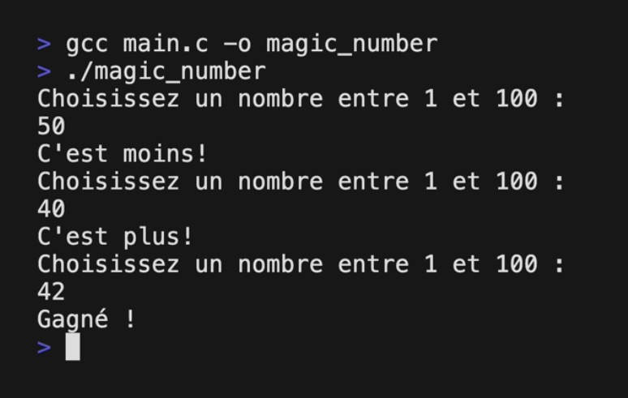
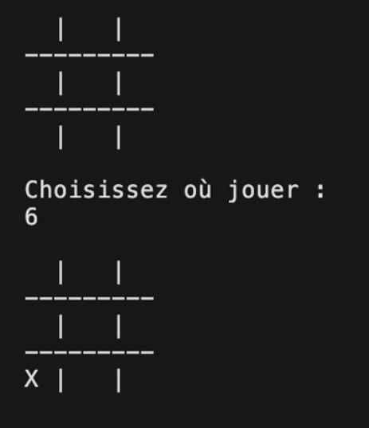
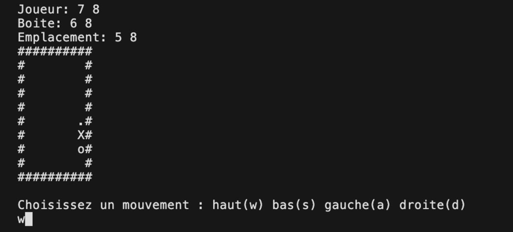

<!DOCTYPE HMTL>
<hmtl lang="fr">

    <head>
        <meta charset="utf-8">
        <title>Mes projets</title>
    </head>

    <body>

        <h1>
            <u>Qu'est ce que j'ai pu réaliser à ce jour ?</u>
        </h1>

        <h2>
            <u>Projets réalisés en C:</u>
        </h2>

            <h3>
                <u><a href="https://github.com/Eliottr45/coda-bnv-numero-magique.git" target="_blank"> Projet numéro
                        magique </a></u>
            </h3>

        <div>
            

            <p>Ce projet visé à créer le jeu du "plus ou moins" qui consiste à trouver un nombre prédéfini avec une aide
                à chaque réponse de l'utilisateur.</p>
        </div>


        <h3>
            <u><a href="https://github.com/Eliottr45/coda-bnv-tic-tac-toe.git" target="_blank"> Tic-tac-toe</a></u>
        </h3>

        <div>
            

            <p>Ce projet reprend le jeu du tic-tac-toe/morpion, où le but est d'aligner trois même symbole à l'intérieur
                d'une grille de 9 cases.</p>
        </div>


        <h3>
            <u><a href="https://github.com/Eliottr45/coda-bnv-sokoban.git" target="_blank"> Sokoban</a></u>
        </h3>

        <div>
            

            <p>Le sokoban est un jeu qui consiste à déplacer une boite jusqu'à un point donné afin de gagné la partie.
                Ce projet reprend le concept de base du jeu mais s'execute directement dans le terminal de l'ordinateur.
            </p>
        </div>

    </body>
</hmtl>